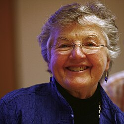
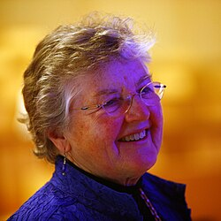

Frances Allen | |
|---|---|
 | |
| Born | Frances Elizabeth Allen August 4, 1932 Peru, New York, U.S. |
| Died | August 4, 2020 (aged 88) Schenectady, New York, U.S. |
| Citizenship | American |
| Education | University at Albany (BS) University of Michigan (MS) |
| Spouse | |
| Awards |
|
| Scientific career | |
| Fields | |
| Institutions | IBM New York University |
| Website | www |
Frances Elizabeth Allen (August 4, 1932 – August 4, 2020)[2][3] was an American computer scientist and pioneer in the field of optimizing compilers.[4][5][6] Allen was the first woman to become an IBM Fellow, and in 2006 became the first woman to win the Turing Award.[7] Her achievements include seminal work in compilers, program optimization, and parallelization.[8][9] She worked for IBM from 1957 to 2002 and subsequently was a Fellow Emerita.[10]
Allen grew up on a farm in Peru, New York, near Lake Champlain, as the oldest of six children. Her father was a farmer, and her mother an elementary school teacher.[10] Her early elementary education took place in a one-room school house a mile away from her home, and she later attended a local high school.[11]
She graduated from The New York State College for Teachers (now part of the University at Albany, SUNY) with a Bachelor of Science degree in mathematics in 1954 and began teaching school in Peru, New York.[11] Allen taught math from algebra to trigonometry.[12] She needed a Master's degree to earn a teaching certification, so after two years, she enrolled at the University of Michigan. She earned a Master of Science degree in mathematics in 1957.[13]
Deeply in debt with student loans, Allen joined IBM Research in Poughkeepsie, New York, as a programmer in 1957, where she taught incoming employees the basics of Fortran.[12] This was one of the first high-level programming languages, and had only been announced two months before Allen joined IBM.[14]
During this period, Allen often learned topics about Fortran only days before teaching researchers the same lessons.[12] She taught herself about Fortran's compiler by reading its source code, and this spawned a lifelong research interest in designing compilers.[14] At the time, researchers were hesitant to move to Fortran because they were used to writing in assembly, and it was common knowledge that compiled languages could not produce code that was performant enough to compare.[15] Allen planned to return to teaching in schools once her student loans had been paid, but ended up staying with IBM for her entire 45-year career.[12]
In 1959, Allen was assigned to the Harvest project for code breaking with the National Security Agency, and worked on a programming language called Alpha.[7] The project was confidential and designed for spying on the Soviet Union, but many on the team did not know the details until they were leaked to the press later. Allen managed the compiler-optimization team for both Harvest and the earlier Stretch project.[15]
In 1962, Allen was transferred to Thomas J. Watson Research Center, where she contributed to the ACS-1 project, and later in the 1970s, to PL/I. During these years, she worked with fellow researcher John Cocke to write a series of seminal papers on optimizing compilers, helping to improve the efficiency of machine code translated from high-level languages.[2] The pair also created an optimizing compiler for Fortran, and the compiler eventually handled Autocoder and Alpha as well.[14]
Allen began to publish papers on optimizing compilers in order to share her knowledge with other researchers. Her first publications included "Program Optimization" and "Control Flow Analysis".[14] Allen and Cocke published "A Catalogue of Optimizing Transformations" in 1972, which systematized the most important techniques for compiler optimizations. The work is considered one of her most important, and it covers key compiler techniques like procedure inlining, loop unrolling, common subexpression elimination, code motion, and peephole optimization.[15]
During her time at IBM, Allen actively pushed for the involvement of computer scientists from underrepresented groups, and found ways to attract and keep women in the field. She was a key reason that half of IBM's compiler research team was composed of women through the 1970s and 1980s.[2] Allen volunteered for many years through the IBM mentor program.[12] Barbara Simons worked with Allen and considered her a friend: she recalled Allen as a strong feminist.[14]
From 1970 to 1971 Allen spent a sabbatical at New York University and acted as adjunct professor for a few years afterward. Another sabbatical brought her to Stanford University in 1977.[13] Allen taught Anita Borg, and was the only woman professor of Borg's while she was in graduate school.[14] Allen was also named the Chancellor’s Distinguished Lecturer and Mackay Lecturer at the University of California, Berkeley and Regents Lecturer at the University of California, San Diego.[12]
From 1980 to 1995, Allen led IBM's work in the developing parallel computing area, and helped to develop software for the IBM Blue Gene project.[16] She worked on PTRAN, the Parallel Translator, which was designed to take advantage of automatic parallelism through noting a program's dependency graph and distributing work across a parallel architecture. The system's goal was to automatically transform programs written sequentially into efficiently parallelized programs.[15]
Allen became the first female IBM Fellow in 1989.[17] She became president of IBM's steering committee, IBM Academy, in 1995.[15] In 2000, IBM began an award in her honor, the Frances E. Allen Women in Technology Mentoring Award.[14]
Allen retired from IBM in 2002, but remained affiliated with the corporation as a Fellow Emerita. In 2007, the IBM Ph.D. Fellowship Award was created in her honor.[17] After retiring, she remained active in programs that encourage women and girls to seek careers in science and computing.[18]
Her A. M. Turing Award citation reads:
Fran Allen's work has had an enormous impact on compiler research and practice. Both alone and in joint work with John Cocke, she introduced many of the abstractions, algorithms, and implementations that laid the groundwork for automatic program optimization technology. Allen's 1966 paper, "Program Optimization," laid the conceptual basis for systematic analysis and transformation of computer programs. This paper introduced the use of graph-theoretic structures to encode program content in order to automatically and efficiently derive relationships and identify opportunities for optimization. Her 1970 papers, "Control Flow Analysis" and "A Basis for Program Optimization" established "intervals" as the context for efficient and effective data flow analysis and optimization. Her 1971 paper with Cocke, "A Catalog of Optimizing Transformations," provided the first description and systematization of optimizing transformations. Her 1973 and 1974 papers on interprocedural data flow analysis extended the analysis to whole programs. Her 1976 paper with Cocke describes one of the two main analysis strategies used in optimizing compilers today. Allen developed and implemented her methods as part of compilers for the IBM STRETCH-HARVEST and the experimental Advanced Computing System. This work established the feasibility and structure of modern machine- and language-independent optimizers. She went on to establish and lead the PTRAN project on the automatic parallel execution of FORTRAN programs. Her PTRAN team developed new parallelism detection schemes and created the concept of the program dependence graph, the primary structuring method used by most parallelizing compilers.

Allen was a Fellow of the Institute of Electrical and Electronics Engineers (IEEE) and the Association for Computing Machinery (ACM). In 2000, she was made a Fellow of the Computer History Museum "for her contributions to program optimization and compiling for parallel computers".[19] She was elected to the National Academy of Engineering in 1987,[20] to the American Philosophical Society in 2001,[21] and to the National Academy of Sciences in 2010.[1] She was nominated a Fellow of the American Academy of Arts and Sciences in 1994.[22]
She received the IEEE Computer Society Charles Babbage Award in 1997 and the Computer Pioneer Award of the IEEE Computer Society in 2004.[23] In 1997, Allen was inducted into the Witi Hall of Fame.[24] She won the 2002 Augusta Ada Lovelace Award from the Association for Women in Computing. In 2004, Allen was the winner of the ABIE Award for Technical Leadership from the Anita Borg Institute.[25][26]
Allen was recognized for her work in high-performance computing with the 2006 Turing Award.[10][27] She became the first woman recipient in the forty-year history of the award, which is considered the equivalent of the Nobel Prize for computing and is given by the Association for Computing Machinery.[28][18][29][30][31] In interviews following the award she hoped it would give more "opportunities for women in science, computing, and engineering".[32] Allen won the Turing award 19 years after her collaborator, John Cocke, won the same award.[14]
In 2009 she was awarded an honorary doctor of science degree from McGill University for "pioneering contributions to the theory and practice of optimizing compiler techniques that laid the foundation for modern optimizing compilers and automatic parallel execution".[33]
In 2020, after Allen's death, IEEE created the Allen Medal to honor "innovative work in computing leading to lasting impact on other fields of engineering, technology or science". This was the second IEEE Medal to be named after a woman.[12] The award was first granted in 2022.[14]
A list of her select publications includes:[4][6]
In 1972, Allen married New York University computer science professor and collaborator Jacob T. Schwartz.[5] They divorced in 1982.[2]
Allen was a mountain climber and member of the American Alpine Club.[12] She established a new route across Ellesmere Island, the most Northern part of Canada.[14]
Allen died on August 4, 2020, her 88th birthday, from complications with Alzheimer's disease.[2][16][34]
{{cite web}}: CS1 maint: deprecated archival service (link)
{{cite press release}}: CS1 maint: deprecated archival service (link)
{kind=link}
{kind=link}